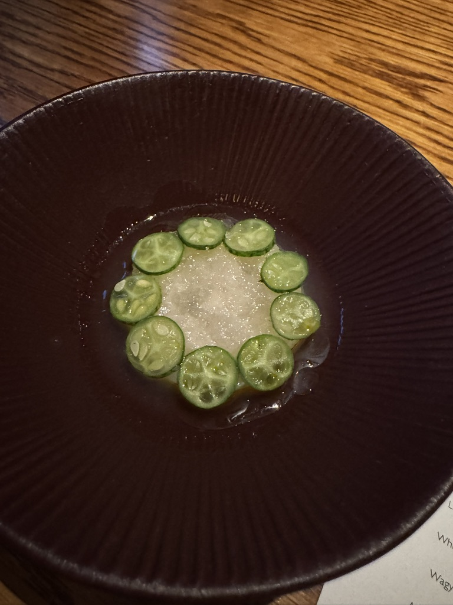
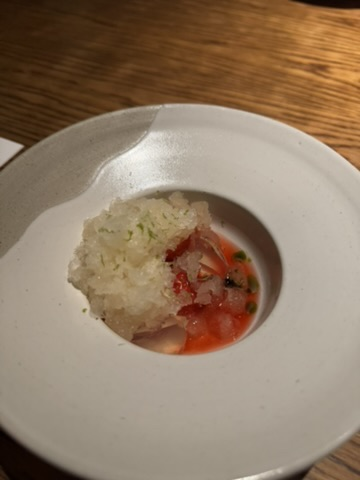
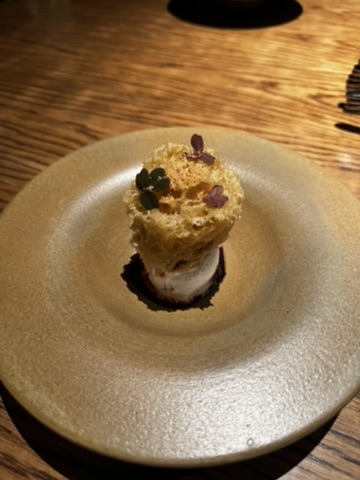

Jakarta / 18 Apr 2026 / Dinner Date
August is still one of Jakarta’s easiest special-occasion yeses.
If you are looking for a Jakarta fine dining reference for a date or birthday, August still holds up. This was my third visit, and it still felt polished, intimate, and worth dressing up for.
NutNibbles Signature Meter
How the night actually landed
I want this blog to be useful when you are deciding where to eat, not just nice to scroll. So for August, here is the quick read first: great service, enough pacing to enjoy the date, no weak dish, and a menu that still felt worth revisiting for the third time.
Personal Review
A modern Indonesian tasting menu that still feels warm, not stiff
August is one of those places I would confidently recommend when someone asks for a fine dining spot in Jakarta that feels impressive without becoming cold. The room stays intimate and homey, the pacing gives you time to actually enjoy the conversation, and the service feels hospitable instead of overly formal.
This dinner was a date night for me, and honestly that is where August works best. It is polished, but not intimidating. Expensive, yes, but in the way that still makes sense once the full set menu starts unfolding and every course feels considered.
- Order expectation: come here ready for the full set menu experience, not just one standout plate.
- Best bites for me: Teh Kotak, BTM Noodle, and the striploin were the clear favorites.
- Weak link? None this time. That alone says a lot for a longer tasting menu.
The Teh Kotak course was the one that stayed in my head after dinner because it was playful, familiar, and very August in spirit: refined, but still tied to flavors that feel close to home. The BTM Noodle delivered comfort in a sharper, more elevated way, while the striploin gave the meal that confident, satisfying main-course peak you want from a special dinner.
Worth it? Yes. If you need a reliable Jakarta reference for a birthday, anniversary, or a date you want to get right, August still deserves a spot high on the list.






